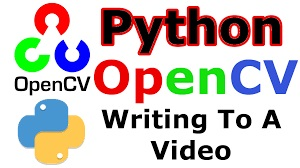
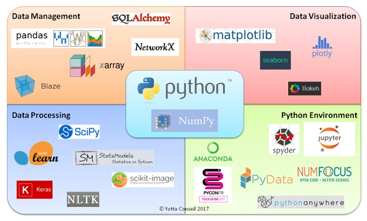
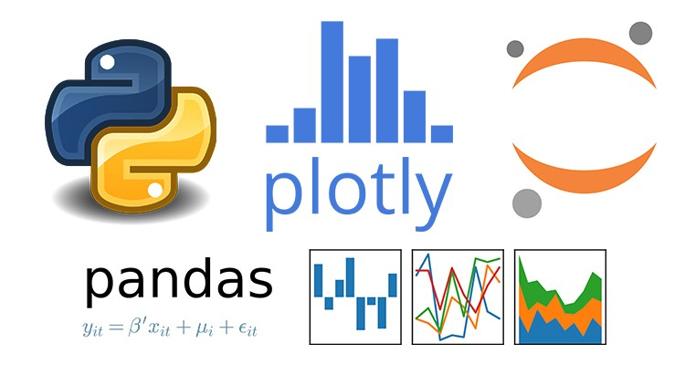
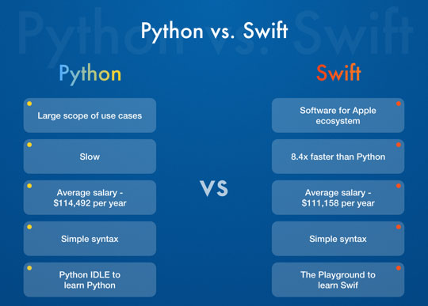
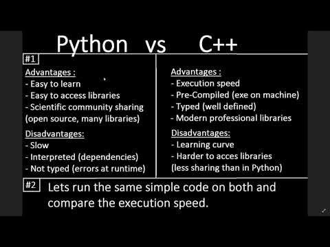

記事掲載：https://laptrinhcanban.com/ja
Pythonは習得と理解が容易な単純な文法構造を持つ言語です。Pythonはいくつかの分野で非常に強力であり、もちろん他のプログラミング言語と比較して弱点もあります。Pythonで何ができるのか、何のためにPythonを学ぶかを理解することで、私たちはより良い概観を持ち、Pythonを学ぶかどうかを決定するのに役立ちます。
何のためにPythonを学ぶか。
Pythonには、次の3つの領域に長所があります。これらの3つの領域のいずれかで活動したい方はすぐにPythonを選択することを躊躇しないでください。
コンピューター上で動作するソフトウェアの開発に興味がある方
Pythonを使用すると、ハードドライブ上のファイルを検索するだけの簡単なものから、写真の編集、作成済みの写真からのmp4ビデオの作成などの複雑なソフトウェアまで、コンピューター上で実行されるアプリケーションを簡単に作成できます。
Pythonは、Excel、jsonなどのデータファイルから一般的なオーディオファイルや画像ファイルへの迅速な処理をサポートしているため、作業の生産性を向上および強化するソフトウェアを作成する場合 は、Pythonが賢明な選択です。

人工知能、ディープラーニングの開発に興味がある方
ディープラーニングは、コンピューターが大量のデータを繰り返し自己分析して構造を自動的に作成し、基本的なパターンを見つけて、それを自分で学習する手法です。これにより、人間が自然に実行する「学習のような機能」をシミュレートできるAIを作成します。
ディープラーニング手法で使用できる言語はたくさんありますが、巨大なデータを処理するという利点があるため、Pythonは現在この分野で使用されている言語のトップにあります。

AI（人工知能）に興味がある場合は、Pythonを学習してください。Pythonはディープラーニングの研究開発に使用される多くのライブラリと統合されているためです。

さらに、単純な文法構造で、これらのライブラリを非常に簡単に呼び出して使用できるため、習得が容易で、学習時間を節約できます。
データ分析に興味がある方
現在、ほとんどすべての企業がデータベースを使用しており、保存される情報の量が増えるにつれて、ビッグデータが形成されています。これは、GoogleやFacebookなどの巨大なデータウェアハウスです。
もちろん、大企業でビッグデータを使用する機会に関係なく、中小企業で作業している場合は、顧客情報、商品、製品などのデータベースを使用する必要があります。また、このデータの分析に苦労している場合は、Pythonを選択してください。
Pythonは、典型的なライブラリであるPandasを使用して、CSVファイル情報の読み取りなどのコマンドを実行し、それらを簡単かつ効率的に追加、編集、削除、分析するのに役立ちます。

Pythonを選ばない方が良い人
スマートフォンアプリ（iPhone、Android）を作成したい方
もちろん、Pythonを使用してモバイルアプリを作成することもできますが、その数がiPhoneのSwiftやAndroidのJava、最近ではKotlinなどと比較すると、Pythonはこの分野で利点がありません。
さらに、Pythonを使用してアプリケーションを作成する方法に関する情報は非常に少ないため、この場合に本当にPythonを使用したい場合は、非常に困難で時間がかかります。

アプリケーションやWebサービスを開発したい方
Pythonは非常に人気のある言語であるため、開発者はPythonで記述された次の3つのWebフレームワークも作成しました。
上記のウェブフレームワークが優れた物だと思いますが、日本では、ほとんどのWeb作成プロジェクトがRubyとPHPによって開発されています。したがって、Pythonには可能性がありますが、実際にはWebを作成するための主要言語としてはあまり適用されておらず、主にWebサイトのデータを管理するために使用されています。
組み込みシステム/アプリケーションを開発したい方
Pythonは、最も人気のあるオペレーティングシステムで実行できる言語です。また、OSに依存しないため、Pythonを使用して大規模なシステムを開発したり、他のシステムで使用する組み込みアプリケーションを作成したりできます。
ただし、これはインタープリターであるため、Pythonをコンピューターが理解できる言語に翻訳し、タスクの実行は並行して行われるため、システム内のPythonの速度はJavaやC#など他の一般的な言語と比較できません。

まとめ
この記事では、Pythonを学ぶべきか。Pythonで何ができるかについて学びました。業界の一部ではPythonはまだその能力を発揮していませんが、Kiyoshiは世界中のプログラマーがPythonを愛することで、Pythonはますます改善され、克服されると信じています。
そして、習得と理解が容易な単純な構造化言語として、Pythonは常にプログラミングの学習を始めようとしている人々にとって最高の選択肢の1つだと思います。
URL Link
ホーム › 初心者向けのpython学習>>01.pythonの紹介